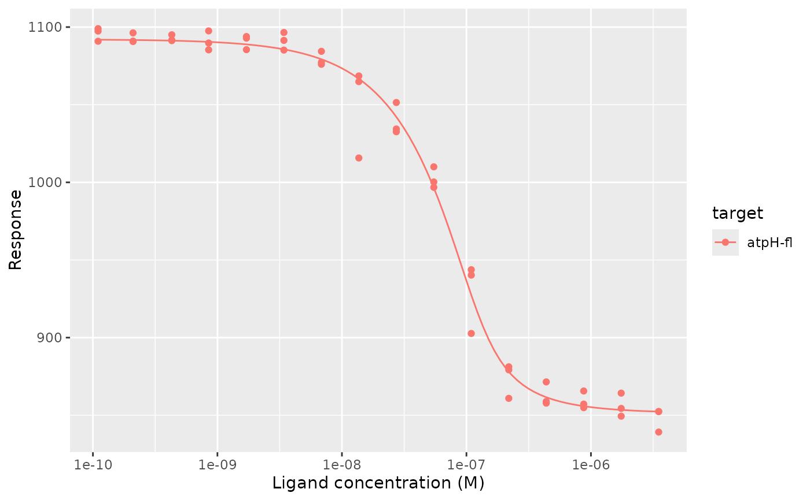

Draws the response at each concentration, with error bars if data has an
error column, and optionally the fitted curves. Requires ggplot2.
Usage
mst_plot_dose_response(
data,
fits = NULL,
concentration = ligand_concentration,
response = response,
colour = NULL
)Arguments
- data
A data frame of dose-response data, such as from
read_mst_dose_response()ormst_fnorm().- fits
Optionally, a tibble of fits from
mst_fit()to draw.- concentration, response, colour
<
data-masking> The columns of ligand concentration, response, and colour of the points.
Examples
doses <- read_mst_dose_response(
tidymst_example("dppr10-cy5_dose-response-flat.xlsx")
)
fits <- mst_fit(doses, .by = target)
mst_plot_dose_response(doses, fits, colour = target)
